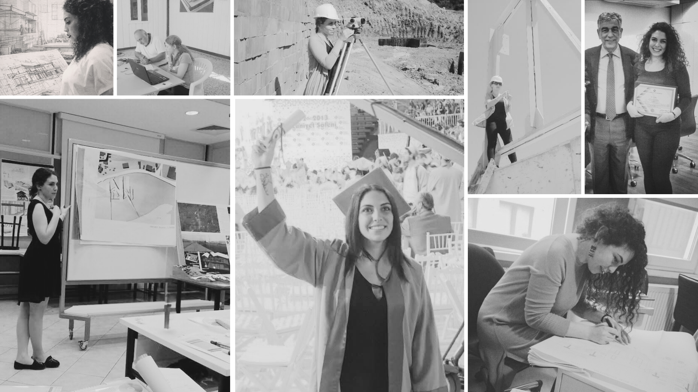

Ben Aslı, 2013 yılında mimarlık eğitimimi tamamladıktan sonra, mesleki sürecimde farklı ölçeklerde projelerde yer alarak deneyimimi geliştirdim. Zamanla iç mekân tasarımı ve uygulama süreçlerine odaklanarak; konut, ticari ve eğitim yapıları üzerine çalıştım. Bu süreçte, mekânın yalnızca estetik değil, aynı zamanda işlevsel ve doğru kurgulanmış olması üzerine yoğunlaştım. Özellikle iç mekân organizasyonu, mobilya tasarımı ve üretim detayları çalışmalarımın temelini oluşturdu. Bugün, Lin Mimari bünyesinde ben ve uygulama ekibimle birlikte, tasarım sürecinden uygulamaya kadar tüm aşamaları kapsayan bir çalışma modeli ile ilerliyoruz. Her projede, kullanıcı ihtiyaçlarını merkeze alarak, yalın, dengeli ve zamansız yaşam alanları oluşturmayı hedefliyorum.
```